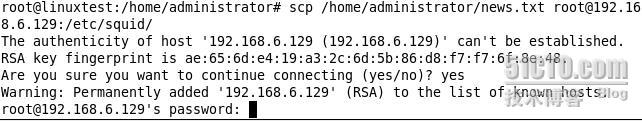

scp 对拷文件夹 和 文件夹下的所有文件 对拷文件并重命名
上传到远端
1、上传目录：
scp -r ./util 用户名@192.168.1.65:/home/wwwroot/limesurvey_back/scp
2、上传文件
scp ./util 用户名@192.168.1.65:/home/wwwroot/limesurvey_back/scp
如果制定了用户名，后面只要输入密码就行了，如果没有写用户名 就要输入用户名 和密码
远端下载：
scp -r jiangzhaowei@211.154.xxx.xxx:/kk/jiangzhaowei/share/webCompileOut.sql ./
橙色标注可选，即如果是目录拷贝要加“-r”参数，用户名可选，如果省略用户名，默认为终端的用户名。
Linux下scp的用法
scp就是secure copy，一个在linux下用来进行远程拷贝文件的命令。
有时我们需要获得远程服务器上的某个文件，该服务器既没有配置ftp服务器，也没有做共享，无法通过常规途径获得文件时，只需要通过简单的scp命令便可达到目的。
一、将本机文件复制到远程服务器上
#scp /home/administrator/news.txt root@192.168.6.129:/etc/squid
/home/administrator/ 本地文件的绝对路径
news.txt 要复制到服务器上的本地文件
root 通过root用户登录到远程服务器（也可以使用其他拥有同等权限的用户）
192.168.6.129 远程服务器的ip地址（也可以使用域名或机器名）
/etc/squid 将本地文件复制到位于远程服务器上的路径

如图通过root用户登录远程服务器，输入yes表示同意建立ssh连接

按提示输入root用户的密码

如图所示建立连接后开始传输文件，显示百分比、实际时间和传送速度等信息
二、将远程服务器上的文件复制到本机
#scp remote@www.abc.com:/usr/local/sin.sh /home/administrator
remote 通过remote用户登录到远程服务器（也可以使用其他拥有同等权限的用户）
www.abc.com 远程服务器的域名（当然也可以使用该服务器ip地址）
/usr/local/sin.sh 欲复制到本机的位于远程服务器上的文件
/home/administrator 将远程文件复制到本地的绝对路径
注意两点：
1.如果远程服务器防火墙有特殊限制，scp便要走特殊端口，具体用什么端口视情况而定，命令格式如下：
#scp -p 4588 remote@www.abc.com:/usr/local/sin.sh /home/administrator
2.使用scp要注意所使用的用户是否具有可读取远程服务器相应文件的权限。


【免费】要想入门学习Linux系统技术，你应该先选择一本适合自己的书籍
【前端】SpreadJS表格控件，可嵌入应用开发的在线Excel
【直播】如何快速接入微信支付功能
· 共享单车泡沫破灭，自行车产业链的每个环节都 被波及
· 科学家发现寨卡减毒活疫苗可治疗恶性脑瘤
· 美团点评10月8日起纳入恒生综合指数
· 王坚：一个预言家的命运
· 韦恩·亨德里克森：咖啡因如何与钙离子共舞
» 更多新闻...
· 在学习中，有一个比掌握知识更重要的能力
· 如何招到一个靠谱的程序员
· 一个故事看懂“区块链”
· 被踢出去的用户
2014-11-22 linux 信号处理 四 （sigaction参数说明）
2014-11-22 linux 信号处理 三 （信号集的使用）